AI Academy · Level 2 · Grade 7 · Week 18 · Student lesson
Missing Data
Learn to understand, design, build, test and explain AI systems responsibly.
Project: Transparent Book Recommender
Before you start
Week 10: missing information cannot automatically satisfy a condition.
Plan time to read, investigate and explain. Keep predictions separate from observations.
Student lesson · 1 of 16
Your mission
Your learning target
I can detect absent and unusable values.
I can keep unknown distinct from zero.
I can report accepted and rejected records.
Remember before reading
Close your notes first. A rough first answer helps us choose the right starting point; it is not a score for your ability.
Without opening the old lesson, explain one key idea from Noise and Outliers. Give an example and a mistake that the idea helps you avoid.
Without opening the old lesson, explain one key idea from Choose Informative Questions. Give an example and a mistake that the idea helps you avoid.
Without opening the old lesson, explain one key idea from Accuracy as a Fraction. Give an example and a mistake that the idea helps you avoid.
After trying, check the relevant lesson or ask your teacher. Change the part of your explanation that the evidence shows was wrong.
Week 18: Missing Data
A system needs an explicit policy for unknown fields.
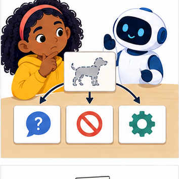
THINKER MISSION
Compare ask, abstain, and default strategies.
Thinker name and date:
Readiness for the connected explanation
Is the text "12" the same type as the integer 12?
This week’s end goal
By the end, I can validate missing values without confusing zero with absent data.
Student lesson · 2 of 16
Notice the evidence
PICTURE STORY
Notice → Predict → Explain
Begin with visible evidence. Do not explain more than the picture and information support.
MYSTERY
The learners must use missing data to solve a problem. What information do they have? What decision or calculation do they make? What would count as evidence that it worked?
Three observations (what you can point to):
My prediction and the clue supporting it:
A closer explanation
A fictional activity log contains an absent duration, a recorded zero and an out-of-range value. Our schema accepts exact integer minutes from 0 through 60. Keep rejected records visible for review instead of replacing their values with guesses.
Student lesson · 3 of 16
See how it works
VISUAL MECHANISM
Input → Process → Output
Trace the information. At each stage, ask what changed and how you could test it.
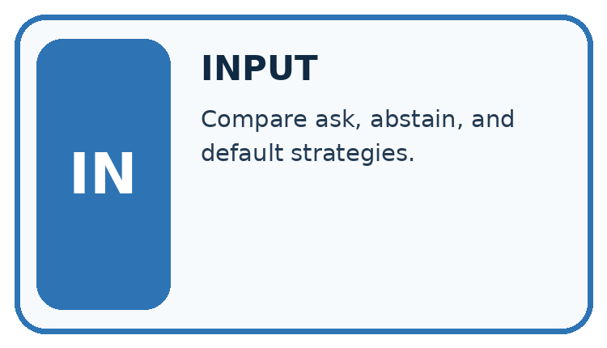
↓
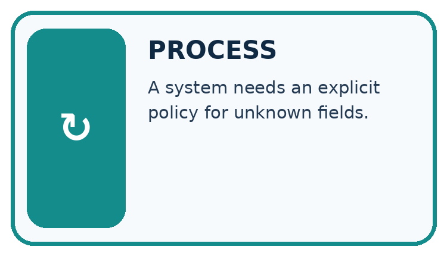
↓
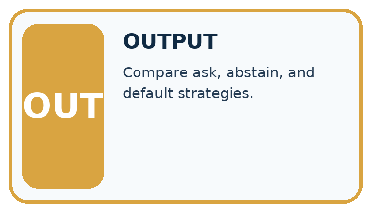
Which stage could fail even when the other two are correct? Explain:
A closer explanation
rows = [{"minutes": 0}, {}, {"minutes": 12},
{"minutes": -1}, {"minutes": None}]
accepted = []
rejected = 0
for row in rows:
value = row.get("minutes")
if type(value) is int and 0 <= value <= 60:
accepted.append(value)
else:
rejected = rejected + 1
print(accepted)
print(rejected)Follow the evidence
dict.get returns None when this key is absent. An explicit None also represents unknown in this dataset. append adds an item to the end of a list. The script prints [0, 12] and then 3. The exact type check prevents comparing None or text with the numeric range.
Keep zero separate from unknown
A recorded 0 says the measured duration was zero. A missing field says we do not have the duration. They are different statements. Trace each record with three columns: raw value, decision and reason. Keep 0 and 12; reject the absent value, -1 and None. The accepted list therefore has two values and the rejection count is three. Do not turn an unknown value into a number just to make the calculation run.
Connect the picture and the explanation
Point to the input, the deciding step and the result in this week’s visual. Explain the same step in ordinary words. A picture helps when you can say what each part represents.
Student lesson · 4 of 16
Compare the cases
CASE GALLERY
Four Tests, Four Kinds of Evidence
A system is not understood until it survives more than one comfortable example.


NORMAL CASE: predict and name evidence. BOUNDARY CASE: predict and name evidence.


MISSING INFORMATION: predict and name evidence. TRANSFER CASE: predict and name evidence.
Which case is most likely to reveal a hidden assumption? Why?
Change one thing in the pictured case
Change: Replace text "4" with integer 4 through an authorised conversion.
Prediction: Accepted values become [0,4,4]; three rows remain rejected.
Reason: The converted value now satisfies both type and range checks.
Student lesson · 5 of 16
Words that unlock the idea
VOCABULARY LAB
Words You Can Use to Reason
A definition matters when you can recognize the idea, use it, and contrast it with a near-miss.
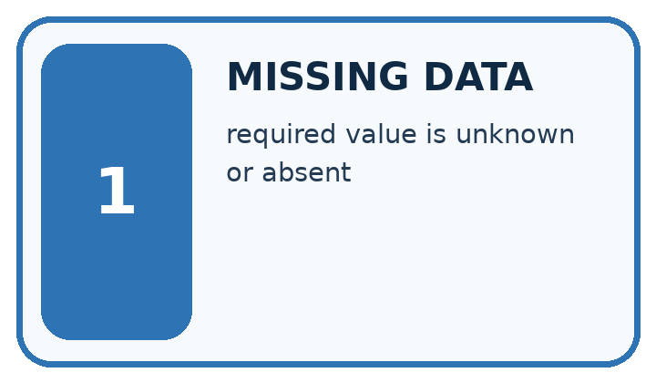
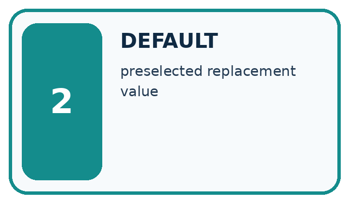
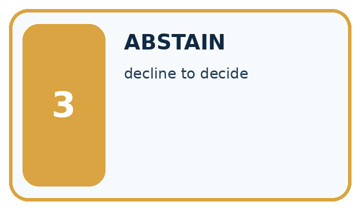
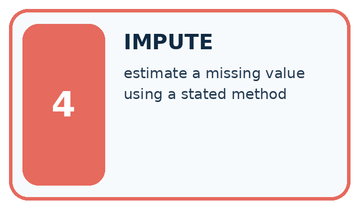
| Word | My own example | Not this / boundary |
|---|---|---|
| missing data | Information that was not recorded or is unavailable, which is different from an observed zero. | |
| default | The value or behaviour used when no alternative is specified. | |
| abstain | Decline to make a prediction when the available evidence does not meet the decision rule. | |
| impute | Replace a missing value using a stated method; an imputed value is an estimate, not an observation. |
Words used in the closer explanation
| Word | Meaning |
|---|---|
| Missing value | A value that was not recorded |
| Validation | Checking data against explicit rules |
| Rejection | Holding a record out because it fails a rule |
| Coverage | Which intended records or groups are represented |
Student lesson · 6 of 16
Follow a worked example
WORKED EVIDENCE
Reason Step by Step
Predict first. Then check each step. A correct answer without visible reasoning is incomplete evidence.
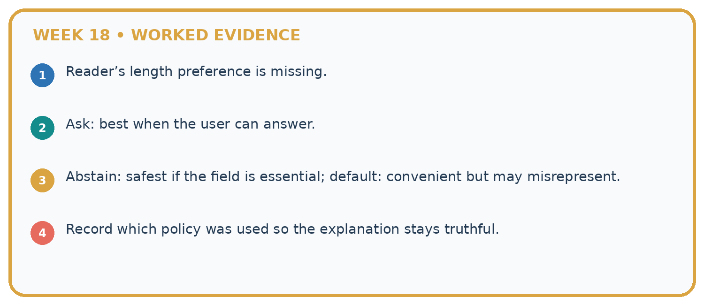
1. Reader’s length preference is missing.
2. Ask: best when the user can answer.
3. Abstain: safest if the field is essential; default: convenient but may misrepresent.
4. Record which policy was used so the explanation stays truthful.
Recalculate, retrace, or restate the reasoning in your own representation:
CHECK Did the evidence answer the exact question? Did the total, path, or source record stay consistent?
A closer explanation
Learn from the worked case
Cover the result before checking it. Say what is given, choose the procedure, and follow one step at a time. Then uncover the result and explain your first mismatch. Ask why a step is allowed, not only what number it produces.
A pictorial worked case: Missing Data
A fictional catalogue records counts of available copies under a strict input contract.
The facts we will use
Accept count only if type(value) is int and 0<=value<=8. Missing fields are invalid, and Booleans are not counts.
Rows have count 0, count 4, absent count, count "4", count True and count 9.
![Missing Data. Retrieve carefully: Use row.get("count"); absent field gives None, distinct from 0.. Check exact type: Integers 0,4 pass; text "4", Boolean True and None fail.. Check range: Integer 9 fails maximum 8.. Report validation: Accepted counts [0,4]; four rows rejected with recorded reasons.](../assets/academy-visual-ai-2-18.png)
Read the picture one step at a time
Why this result follows
Testing if value would wrongly discard zero, which is a real valid count. Python’s isinstance(True,int) is true, so the stated exact-integer contract uses type(value) is int to reject Boolean input. Keep missing, type-invalid and range-invalid reasons separate rather than turning every rejected value into zero.
What this example does not establish
Type and range checks cannot confirm whether the real shelf count was measured accurately.
Read the labelled picture: Why is the Boolean True rejected even though arithmetic can treat it like 1 in Python?
Change one thing: Replace text "4" with integer 4 through an authorised conversion. Predict the result before checking the explanation. What remains the same?
Student lesson · 7 of 16
Find and repair a mistake
ERROR DETECTIVE
Compare → Diagnose → Repair
Do not patch the answer. Find the earliest unsupported assumption, wrong step, or weak evidence.
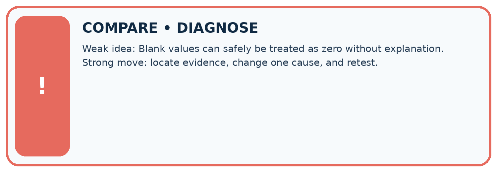
| Evidence record | Expected | Actual | Likely cause / next test |
|---|---|---|---|
| normal case | works | ||
| boundary case | stated rule | ||
| missing input | safe response | ||
| fresh transfer | generalizes |
Repair one cause. Why is this repair better than changing several things?
A closer explanation
Rejection can change which sessions remain represented. Report 2 accepted of 5 supplied here. A summary of accepted rows does not automatically describe the missing or rejected sessions.
Student lesson · 8 of 16
Practise together
LOGIC STUDIO
Trace Before You Run
Block code, pseudocode, tables, and diagrams are different ways to expose the same reasoning.

SET evidence_record PREDICT expected_result RUN one normal case and one boundary case COMPARE actual_result with expected_result IF different: locate first cause; change one factor; RETEST EXPLAIN result, limitation, and next safe step
Trace one input. Which line changes the state or chooses a path?
A closer explanation
Using if value would discard the legitimate zero and accept some invalid nonempty text. Test the written type and range rules explicitly. Filling an absent duration with 0 falsely claims an observed zero.
Practise with less help: Trace filtering
Use workbook W2 for the connected example “Missing values and validation”. First fill the input and rule boxes. Try the middle steps before asking for a hint. After a hint, try the next step yourself.
| Plan | Do | Check |
|---|---|---|
| What is given? Which rule or procedure applies? | Record each intermediate step. | Does the result follow? What remains unknown? |
Explain your trace to a partner. Your partner points to one step to check. Swap roles on the next case. Each person writes their own explanation.
Check your reasoning
Use the worked case for Missing values and validation. Proposed explanation: “A successful run proves the conclusion”. Decide whether this explanation is supported. Point to the step or supplied fact that decides; explain your repair if needed.
Answer on your own before discussion. If you are unsure, say which step you need help with.
Explain the picture
Why is the Boolean True rejected even though arithmetic can treat it like 1 in Python?
This is supported practice. Keep the separately named independent case for an attempt before feedback.
Student lesson · 9 of 16
Run the investigation
EVIDENCE LAB
Predict → Test → Record → Explain
Keep expected and actual results separate. Surprises are useful data when recorded honestly.
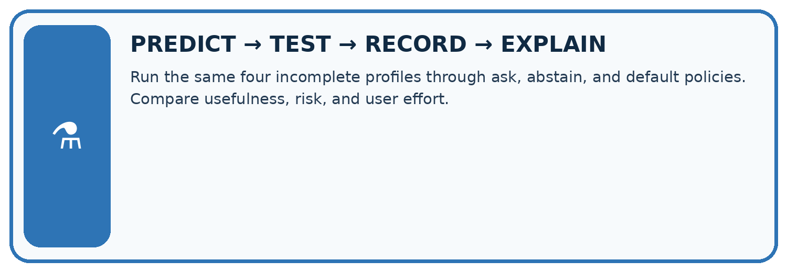
Run the same four incomplete profiles through ask, abstain, and default policies. Compare usefulness, risk, and user effort.
| Test / input | Prediction | Actual | Evidence / calculation | Change or keep? |
|---|---|---|---|---|
| normal | ||||
| boundary | ||||
| missing | ||||
| fresh transfer |
What did the hardest test teach you that the normal test did not?
Plan → try → check
Before trying: what do I expect, and why? While trying: which step could first go wrong? Afterwards: what did I actually observe, and what should change? Keep “not run” if you only traced the procedure.
Student lesson · 10 of 16
Build your understanding
MASTERY
From Knowing the Word to Owning the Idea
Move upward only when you can produce evidence without copying the worked example.

1 • NAME: Define the concept without repeating the textbook.
2 • TRACE: Show the information, state, branch, calculation, or evidence path.
3 • APPLY: Solve a different example independently.
4 • CHALLENGE: Find a boundary case, counterexample, or unfair outcome.
5 • EXPLAIN LIMITS: Say when the result should not be trusted or used alone.
My strongest evidence of independent understanding:
Student lesson · 11 of 16
Connect your project
CUMULATIVE PROJECT
Transparent Book Recommender
Every week adds one inspectable piece. The system must show how it reached a result.
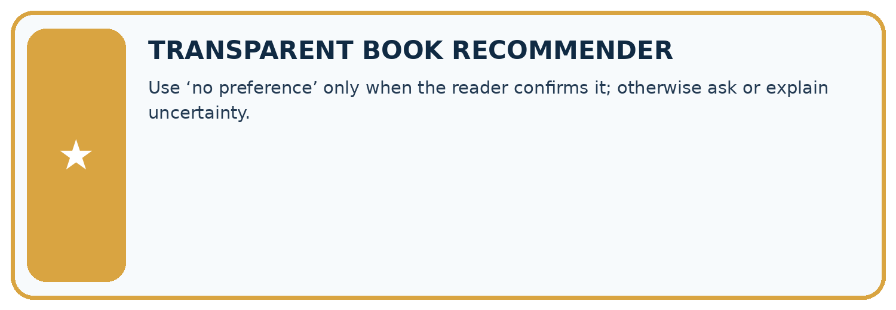
THIS WEEK’S CHECKPOINT Use ‘no preference’ only when the reader confirms it; otherwise ask or explain uncertainty.
SYSTEM MAP Reader need → allowed inputs → transparent rule or score → ranked candidates → explanation → test record → human decision
What will you add, change, or verify in the project this week?
What should remain under human control?
RESPONSIBLE DESIGN Collect only necessary information. Show uncertainty and limits. Never confuse a ranking with a fact about a person.
Evidence for your project
Validate recommender stock and numeric features explicitly, recording zero stock as measured zero rather than missing.
Student lesson · 12 of 16
Show what you know
INDEPENDENT MASTERY PROOF
Explain • Transfer • Test • Defend
Complete this page without copying the worked example. Your reasoning matters more than decoration.
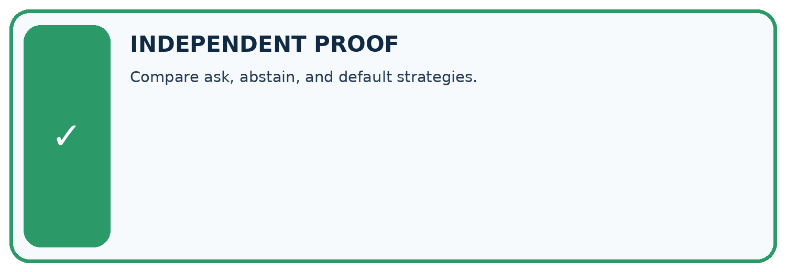
CHALLENGE Compare ask, abstain, and default strategies.
1. My fresh example, trace, calculation, or design:
2. My evidence that it works (include a boundary or missing-data case):
3. One limitation, fairness concern, or situation needing human review:
SELF-CHECK □ I explained the mechanism □ I used evidence □ I tested a fresh case □ I named a limitation □ I can answer ‘why?’
Student lesson · 13 of 16
Study a complete case
Week 18 Worked case
Use the supplied details to practise the weekly concept before attempting the independent question. This case extends the illustrated lesson.
The situation
Genre is known, but page count is missing and length affects recommendation score.
The question
Choose transparent handling.
Worked explanation
Retrieve or ask for the count, or use a documented partial-score policy with uncertainty. Do not silently insert zero.
Explain it in your own words
Which detail supports the answer, and why does it matter?
Trace the supplied case visually
Missing is different from zero
| Evidence or stage | Value or result |
|---|---|
| Retrieve | Look up the page count |
| Ask | Request the missing information |
| Partial score | Use a documented policy with uncertainty |
Genre is known, but page count is missing and length affects recommendation score.
Choose transparent handling.
Retrieve or ask for the count, or use a documented partial-score policy with uncertainty. Do not silently insert zero.
Student lesson · 14 of 16
Try a new case independently
Independent case: Validate independently
Write a filter for count values that must be integers from 0 to 10. Process {count: 3}, {}, {count: 0}, {count: 11}, {count: "3"}, using quoted keys in Python. Report accepted values and rejected count.
Attempt this case before feedback. Record any help. Earlier examples below are further practice; a case already practised with feedback cannot establish fresh transfer.
Week 18 Independent application
Close the worked explanation. Apply the idea to this different question without copying.
A book's page count is blank. Is blank the same as zero? Give an honest way for a short-book recommender to respond.
My answer, with a trace, calculation or supporting evidence
Create and test
Change one relevant detail. Predict the result before testing. Include a boundary or missing-information case when it helps reveal a limit.
My changed input and expected result
Connect to your project
Use ‘no preference’ only when the reader confirms it; otherwise ask or explain uncertainty.
The evidence I will keep
Your teacher has the independent answer and scoring criteria. Complete the matching workbook week to keep your practice evidence together.
Transfer practice from the original programme
Scores award 2 for preferred genre and 1 for short length. A book matches genre but page count is missing. Compare rejecting it, assigning zero length points and asking for pages.
Use feedback to improve
Attempt the independent case before hints. Record whether you worked alone, used a hint or followed a model. After feedback, fix the first unsupported step and explain why it changed. A later check uses a changed case, not a copied answer.
Student lesson · 15 of 16
Your lesson route
Start with this question: A fictional catalogue records counts of available copies under a strict input contract.
| By the end, I can | How I will show it |
|---|---|
| Detect absent and unusable values | Explain the deciding step, show a trace or test, and state one limit. |
| Keep unknown distinct from zero | Explain the deciding step, show a trace or test, and state one limit. |
| Report accepted and rejected records | Explain the deciding step, show a trace or test, and state one limit. |
Remember → watch and explain → try with help → investigate → try independently → keep project evidence. Your teacher may spread this lesson across several classes.
Keep your first prediction. Compare it with what the evidence shows and explain any change.
Student lesson · 16 of 16
Finish and return
Close your notes. Explain this goal in your own words: Detect absent and unusable values
If you are unsure, return to the worked picture and explain one arrow. If you are ready, change an input or assumption and justify your prediction.
Save your workbook evidence. At the next review, try a different case before opening your old answer.